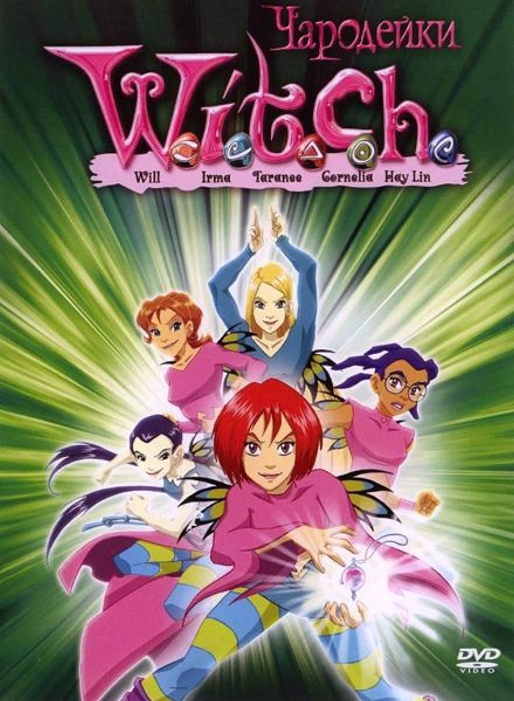

Pino Van Lamsweerde's Filmography
Title
Cover
Description
W.I.T.C.H.
Five teenage girls learn that they have been chosen to guard the walls between parallel universes. For this purpose, they have been given the powers of the elements.
Dragon Hunters

Gwizdo and Lian-Chu are dragon hunters for hire in a world of floating islands, earning a living where they can find it and trying to pay their rent.
Code Lyoko

When a group of four boarding school students discover a supercomputer housed inside an abandoned factory, they find a virtual world called Lyoko and awaken a sentient multi-agent system virus that tries to take over the real world.
Code Lyoko
When a group of four boarding school students discover a supercomputer housed inside an abandoned factory, they find a virtual world called Lyoko and awaken a sentient multi-agent system virus that tries to take over the real world.
Code Lyoko
When a group of four boarding school students discover a supercomputer housed inside an abandoned factory, they find a virtual world called Lyoko and awaken a sentient multi-agent system virus that tries to take over the real world.